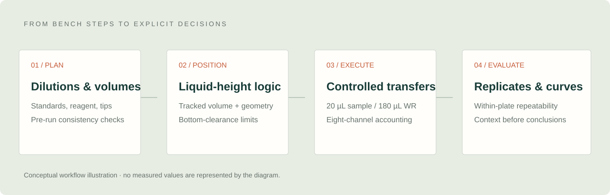
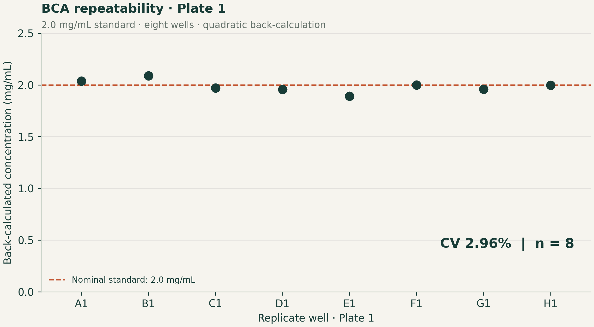

Translating a bench assay into a controlled workflow
A liquid-handling robot can repeat a sequence of commands. Building a useful experimental workflow requires a more detailed question: where is the liquid, how should it move, and how will I know whether the result is repeatable?
I developed custom Python protocols for the Opentrons OT-2 to automate a peptide BCA workflow. The work connected dilution planning, eight-channel transfers, changing liquid heights, aspiration and dispensing behavior, and quantitative evaluation of plate-reader results.
The assay format used 20 µL of sample and 180 µL of working reagent per well. The result shown here is a focused example from Plate 1, using eight replicate wells at the 2.0 mg/mL standard. The case study emphasizes the protocol design and this specific repeatability example.

My contribution
I translated the bench workflow into configurable Python protocols, implemented volume-aware transfer logic, and used BCA testing to evaluate the automated workflow. My focus included:
- Selecting pipettes for the transfer volume: the P20 multichannel for 20 µL sample transfers and the P300 multichannel for larger reagent and dilution transfers.
- Tracking liquid remaining in each source and updating the intended aspiration position after every transfer.
- Defining aspiration and dispense Z positions relative to the calculated liquid level while maintaining a minimum bottom clearance.
- Controlling aspiration and dispensing rates for standards and samples.
- Planning standard dilutions, mixing, tips, and reservoir consumption before a run.
- Inspecting replicate results and distinguishing a successful individual condition from the performance of the entire assay.
Liquid position is part of the method
The protocol uses the liquid volume and the labware geometry to calculate a target height. This is model-based positioning, rather than a claim of sensor-based liquid-level detection.
For aspiration, the source volume is updated to the amount expected to remain after the transfer. The target position is placed below that calculated surface, with a minimum distance above the bottom. For dispensing, the position is calculated from the expected final volume in the receiving well.
The inspected implementation includes these settings:
| Control | Implemented setting or rule | Design purpose |
|---|---|---|
| Aspiration depth | 3 mm below the estimated post-aspiration liquid level, subject to the bottom-clearance limit | Keep the tip in the liquid as the source is depleted |
| Bottom clearance | At least 1 mm above the well bottom | Bound the lowest commanded position |
| Dispense position | 2 mm below the estimated final liquid surface, subject to the clearance limit | Make the intended dispense location explicit |
| Protein-handling flow rate | rate=0.5 for aspiration and dispensing |
Use a controlled multiplier of each pipette’s default flow rate |
| Reservoir consumption | Account for eight tips drawing from one trough | Keep the volume model consistent with multichannel use |
| Setup checks | Optional pauses at the exact transfer location and a separate plate-height check protocol | Compare the intended location with the physical setup |
These are the configured settings in the inspected protocols, not universal operating recommendations for every liquid, labware, or pipette. Physical labware-position checks remain part of the setup.
Designing the run before moving the robot
The protocol checks the planned experiment before liquid handling starts. It calculates the standard concentrations, predicts source consumption, checks destination capacity, and checks the required tip columns and available reagent volume.
The revised protocol also reserves liquid rather than planning to aspirate each source down to its bottom. Working-reagent selection is based on remaining volume, and run parameters control the number of assay plates and setup options.
This makes practical constraints explicit in the code: a transfer plan must be consistent not only with target concentrations, but also with the actual volumes and consumables available on the deck.
BCA repeatability: a Plate 1 example
¹Plate 1 achieved a CV of 2.96% across eight replicate wells at the 2.0 mg/mL standard. The values are concentrations back-calculated using Plate 1’s quadratic standard curve.

CV is the sample standard deviation divided by the mean, multiplied by 100, across these eight wells. This is a selected, condition-specific BCA assay repeatability result, rather than a claim about all concentrations, the whole plate, or independently measured pipette-volume precision. The standard series was also used to fit the calibration curve; this example is not an independent QC validation.
Iterating the protocol
Experimental evaluation informed changes to tip use, mixing checkpoints, dilution planning, and residual-volume checks. The revised design uses fresh sample tips for each assay-plate column, defined plate-shaker mixing steps, and volume-based reagent-source selection.
The Plate 1 example above comes from the initial evaluation. It is not presented as a performance validation of the later revised code.
What this project demonstrates
The contribution is an experimental workflow encoded as explicit, inspectable decisions: liquid geometry, pipette selection, flow control, resource planning, physical checks, and evidence-based iteration.
Rather than assuming that automation guarantees reproducibility, I used the assay results to identify which conditions were repeatable and where the workflow needed further work. That approach makes the protocol easier to troubleshoot, extend, and evaluate for the next plate-based experiment.
Technical references
- Opentrons: well geometry and volume-to-height calculation
- Opentrons: aspiration and dispense commands and rate multipliers
The project descriptions and figures summarize my own protocol-development and BCA evaluation work. The workflow illustration is schematic. No clinical sample data or unrelated research findings are included.